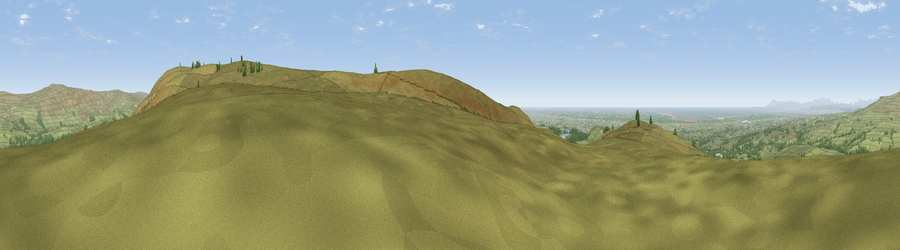

Grizedale Head
#4530 in England · top 10% of its area beats it · near DolphinholmeThe view, rendered

A 360° render of this exact spot computed from the terrain model, tree cover and land cover — summer colours, afternoon light, calibrated against photographs of famous viewpoints. Real trees, hedges and buildings will differ in detail.
The panorama
Grey silhouette: terrain skyline in each direction (720 bearings, Earth curvature and refraction included). Dashed green: skyline with trees (+15 m) and buildings (+8 m) as obstacles. Blue strip: how far the ground is visible on each bearing.
Where the view opens
Wedge length = distance to the farthest visible ground on that bearing (vegetation-aware). Rings at 10, 25 and 50 km.
What fills the view
85% grassland · 8% woodland · 5% water · 2% cropland · 1% built-up
Angular shares of the visible panorama (visual magnitude), not map area. Landscape diversity 0.26 (0–1 Shannon).
Key numbers
More beautiful places nearby
The staircase of upgrades: each row has a higher view potential than everything closer. Driving times are estimates from straight-line distance, calibrated against real road routing — check an actual route before setting out.
| Place | Direction | Drive | Score |
|---|---|---|---|
| Viewpoint near Dolphinholme | WSW · 1 km | ~3 min | 74.4 |
| Viewpoint near Scorton | WSW · 2 km | ~6 min | 75.0 |
| Viewpoint near Bleasdale | S · 4 km | ~9 min | 76.5 |
| Viewpoint near Scorton | WSW · 4 km | ~10 min | 79.9 |
| Warton Crag | NNW · 23 km | ~38 min | 83.2 |
| Viewpoint near Grange-over-Sands | NNW · 32 km | ~49 min | 83.4 |
| Viewpoint near Cartmel | NW · 35 km | ~53 min | 87.0 |
| Viewpoint near Cartmel | NW · 35 km | ~53 min | 87.2 |
53.95132, -2.67835 · source: osm peak · position refined by local search. Computed location — check access rights before visiting.